| ICSM 2009 Conference Committee | ICSM Resource Site Home | ICSM 2011 Conference Committee |
| General Chair | 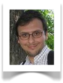 |
Radu Marinescu
Politehnica University of Timișoara Romania |
||||
| Program Chairs | 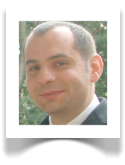 |
Michele Lanza
University of Lugano Switzerland |
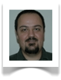 |
Andrian Marcus
Wayne State University USA |
||
| Doctoral Symposium Chairs | 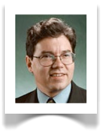 |
Hausi Müller
University of Victoria Canada |
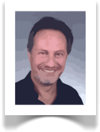 |
Oscar Nierstrasz
University of Bern Switzerland |
||
| Industrial Track Chairs | 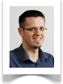 |
Árpád Beszédes
University of Szeged Hungary |
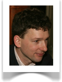 |
Arie van Deursen
Delft University of Technology The Netherlands |
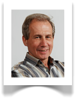 |
Tibor Gyimóthy
University of Szeged Hungary |
| Tutorials Chair | 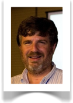 |
Michael Godfrey
University of Waterloo Canada |
||||
| Tool Demonstrations Chairs | 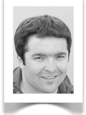 |
Tudor Gîrba
Switzerland |
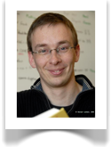 |
Yann-Gaël Guéhéneuc
École Polytechnique de Montréal Canada |
||
| Early Research Achievements Chairs | 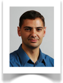 |
Rudolf Ferenc
University of Szeged Hungary |
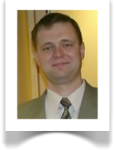 |
Denys Poshyvanyk
The College of William & Mary USA |
||
| Finance Chair | 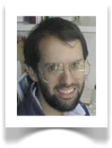 |
Dave Binkley
Loyola College in Maryland USA |
||||
| Publicity Chairs | 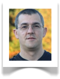 |
Danny Dig
UPCRC Illinois USA |
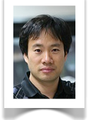 |
Sunghun Kim
Hong Kong University of Science China |
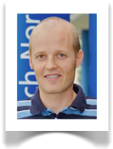 |
Martin Pinzger
TU Delft The Netherlands |
| Proceedings Chairs | 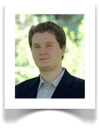 |
Adrian Trifu
Politehnica University of Timișoara Romania |
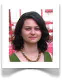 |
Ioana Verebi
Politehnica University of Timișoara Romania |
||
| Local Arrangements Chairs | 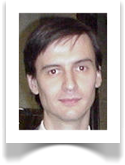 |
Marius Minea
Politehnica University of Timișoara Romania |
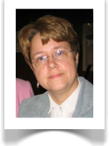 |
Dana Petcu
West University Timișoara Romania |
||
| Webmasters | 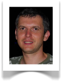 |
Radu Fericean
Océ Software Romania |
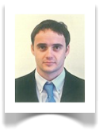 |
George Ganea
Politehnica University Timișoara Romania |
| ICSM 2009 Conference Committee | ICSM Resource Site Home | ICSM 2011 Conference Committee |